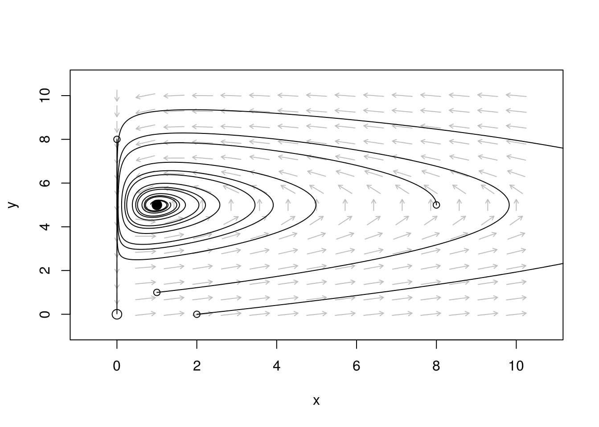
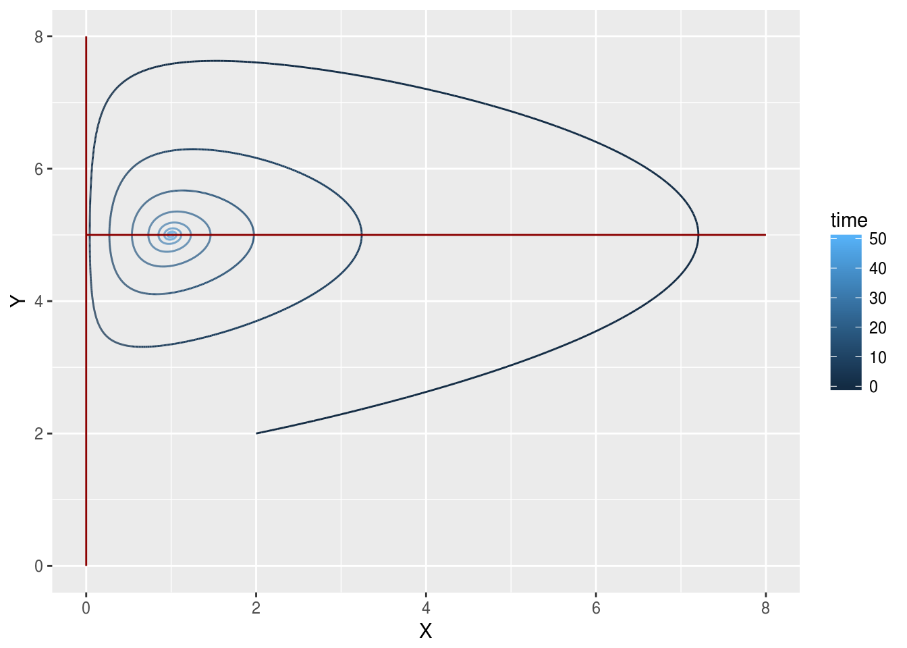
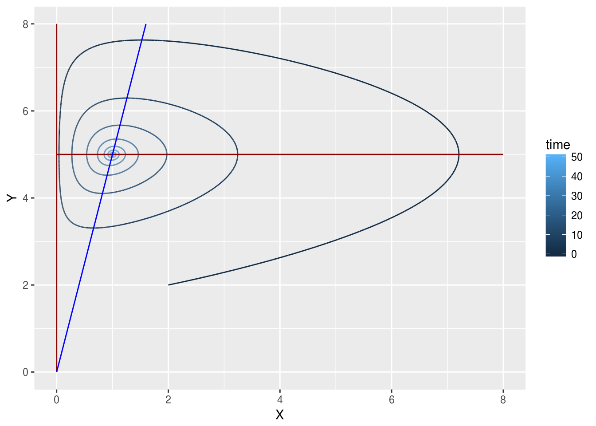
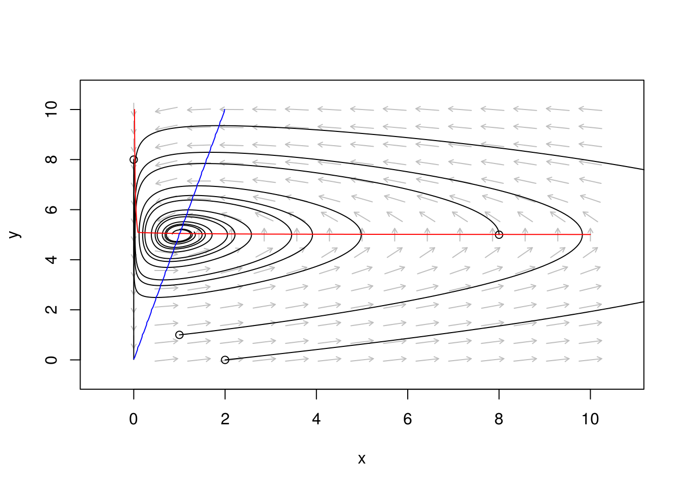
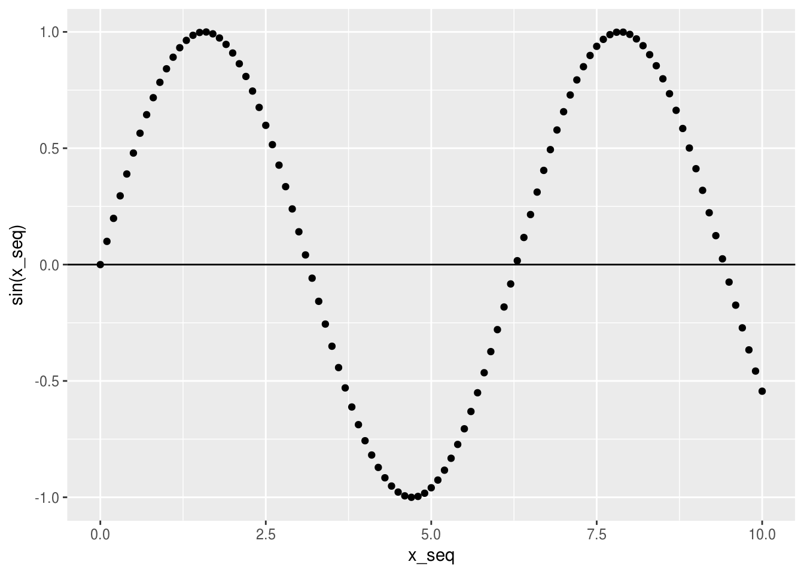
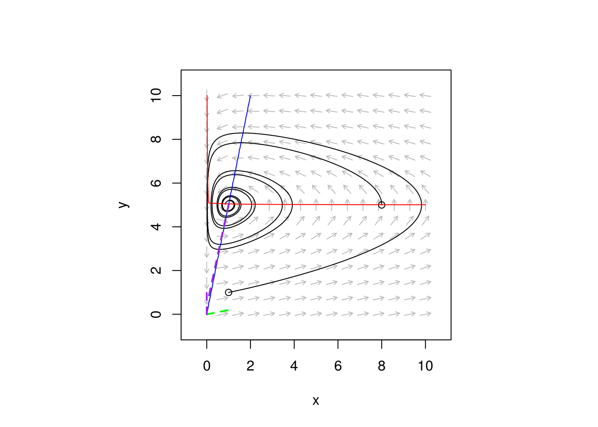

Fixed points, nullclines, and stability
Madeleine Bonsma-Fisher
Lesson preamble
Learning objectives
- Find fixed points for one-dimensional systems analytically
- Find fixed points for two-dimensional systems analytically
- Find nullclines for two-dimensional systems
- Analyze stability for one and two-dimensional systems analytically
- Write down the Jacobian matrix
- Use R to find eigenvalues of the Jacobian
- Classify stability of fixed points using eigenvalues of the Jacobian
Lesson outline
Total lesson time: 2 hours
- Finding fixed points analytically (30 min)
- Finding and plotting nullclines (20 min)
- Quantitative stability analysis in one dimension (20 min)
- Quantitative stability analysis in two dimensions (40 min)
Setup
install.packages('phaseR')install.packages('deSolve')install.packages('ggplot2')(ortidyverse)install.packages('dplyr')(ortidyverse)install.packages('tidyr')(ortidyverse)
Finding fixed points analytically
Up until now we’ve been plotting \(\frac{dN}{dt}\) vs. \(N\) to find the fixed points of a system. But we can also solve \(\frac{dN}{dt}\) \(=0\) analytically to find the fixed points. One advantage of finding the fixed points analytically is that you can see how the fixed points depend on the model parameters, whereas before we had to choose parameters in order to plot \(\frac{dN}{dt}\) and find the fixed points qualitatively.
\[\frac{dN}{dt} = rN(1-\frac{N}{K})\]
First, we set \(\frac{dN}{dt}\) \(=0\).
\[0 = rN(1-\frac{N}{K})\]
Next, we find all the values of \(N\) that satisfy this equation. If either \(rN = 0\) or \(1-\frac{N}{K} = 0\), the equation is satisfied. This means we have two fixed points, one at \(N = 0\) (since \(r \neq 0\)) and the other at \(N = K\). These are the same fixed points we found graphically last week. Notice that one of the fixed points depends on \(K\), but that neither of the fixed points depend on \(r\).
Challenge
Find the fixed point(s) of the following differential equation:
\[\frac{dx}{dt} = x^2 - 1\]
- First find the fixed points analytically on paper.
- Plot \(\frac{dx}{dt}\) vs. \(x\) for \(x\) ranging from \(-2\) to \(2\) in \(0.1\) increments.
- Sketch a phase portrait. Are the fixed point(s) stable or unstable?
Fixed points in two-dimensional systems
Why are we bothering to find fixed points analytically when we could find them graphically? One reason that we touched on last class is that it allows us to see how the fixed points depend on the model parameters. Another reason is that by solving the system analytically, we can be sure that we found all the fixed points, even ones that we wouldn’t find by simulating trajectories.
Finding fixed points in two dimensions is similar to finding them in one dimension, but now we have two equations that we have to solve simultaneously. That means we set both \(dx/dt = 0\) and \(dy/dt = 0\) and find combinations of \(x\) and \(y\) that make both zero at the same time.
Let’s find the fixed points for our predator-prey model:
\[\frac{dx}{dt} = ax - bxy\] \[\frac{dy}{dt} = cx - yd\]
We need to solve \(0 = ax - bxy\) and \(0 = cx - yd\). We have two equations and two unknowns, \(x\) and \(y\). Let’s factor the equations where we can:
\[0 = x(a-by)\]
\[0 = cx - dy\]
One possibility from the first equation is \(x = 0\). If \(x = 0\), then \(y\) must also be \(0\) in order for \(cx - dy = -dy = 0\). So one fixed point is \(x = 0, y = 0\).
The other factor in the first equation gives \(a = by\), so \(y = a/b\). If we plug \(y = a/b\) into the second equation, we get \(cx = ad/b\), so \(x = \frac{ad}{bc}\). The second fixed point is \(x = \frac{ad}{bc}, y = \frac{a}{b}\).
Let’s create a phase portrait using phaseR and add these fixed points to the phase portrait.
Challenge
Define a function called predator_prey that uses the format required by ode to calculate and return \(dx/dt\) and \(dy/dt\). Feel free to refer to the notes from last class and re-use what you need.
Now we create the phase portrait using phaseR, add some trajectories, and add the fixed points.
library(phaseR)
# parameters
a <- 5
b <- 1
c <- 1
d <- 0.2
params <- c(a = a, b = b, c = c, d = d) # so that they can be called by name
initial_conditions <- matrix(c(1, 1,
8, 5,
2, 0,
0, 8),
ncol = 2,
byrow = TRUE)
# plot vector field: on a grid of points, plot an arrow in the direction of dx/dt and dy/dt
pp_flowField <- flowField(predator_prey, x.lim = c(0,10), y.lim = c(0,10),
parameters = params,
points = 15, # this is the density of grid points on which to plot arrows
system = 'two.dim', # 'two.dim' is default
add = FALSE)
# add trajectories
pp_trajectory <- trajectory(predator_prey,
# y0 is a matrix where each row is pairs of (X, Y)
y0 = initial_conditions,
t.end = 30, # how far in time to calculate the trajectories
parameters = params, system = "two.dim")## [1] "Note: colour has been reset as required"# plot fixed points (using the base plotting system, which is not as good as ggplot)
# x = 0, y = 0
points(0, 0, # x, y coordinates of point to plot
cex = 1.5) # 'cex' stands for 'character expansion': marker size relative to default
# x = ad/bc, y = a/b
x_star <- a * d / (b * c) # fixed points are often denoted with `star` i.e. x*, y*
y_star <- a / b
points(x_star, y_star, # x, y coordinates of point to plot
pch = 21, # pch = 21 gives a filled circle, 'pch' stands for 'plotting character'
# see https://stat.ethz.ch/R-manual/R-devel/library/graphics/html/points.html
bg = 'black', # background colour
cex = 1.5) 
One interesting thing about this system is that \(x = 0, y = 0\) is an unstable fixed point, but there is one direction in which trajectories are attracted to it: along the y-axis. This makes sense: if there are no prey (\(x = 0\)), then the predators must also go extinct. We will come back to this later when we talk about analyzing stability analytically.
Nullclines in two-dimensional systems
A nullcline is a curve on which one of the derivatives in the model is \(0\). In other words, it’s a series of points for which one of the variables is not changing — its rate of change is \(0\) on that line.
Finding nullclines is similar to finding fixed points, except that when we found fixed points, we required both derivatives to be simultaneously zero. For nullclines, we only set one derivative to zero at a time, and the other one is free to do what it wants.
To find the \(x\) nullcline(s), the curve(s) on which \(x\) will not change, we set \(\frac{dx}{dt} = ax - bxy\) to zero, ignoring \(\frac{dy}{dt}\).
\[0 = ax - bxy\]
Now we proceed exactly as if we were finding the fixed points, but we don’t require that \(y\) be anything in particular. We can factor the right hand side to \(x(a-by)\), which means there are actually two curves for which the rate of change of \(x\) is \(0\). One of them is at \(x = 0\): it’s a straight line on the y-axis. For any value of \(y\), provided \(x = 0\), \(x\) won’t change. The other one is at \(y = a/b\): another straight line, this time at a fixed value of \(y\). For any value of \(x\), provided \(y = a/b\), \(x\) won’t change.
Let’s run a numerical solution for the predator-prey model we’ve been using and plot the null clines we just found.
# run the numerical solution
library(deSolve)
parameters <- c(a = 5, b = 1, c = 1, d = 0.2)
state <- c(X = 2, Y = 2)
times <- seq(0, 50, by = 0.01)
result <- ode(y = state, times = times, func = predator_prey, parms = parameters)
result <- data.frame(result)Plot a trajectory in the phase plane and the nullclines:
library(ggplot2)
x_seq <- seq(0, 8, by = 0.1)
y_seq <- seq(0, 8, by = 0.1)
df <- data.frame(x_seq, y_seq)
p1 <- ggplot() + # assign plot to a variable so we can use it later
geom_path(aes(x = X, y = Y, color = time), result) + # trajectory
geom_line(aes(x = 0, y = y_seq), df, color = 'dark red') + # x nullcline 1
geom_line(aes(x = x_seq, y = a/b), df, color = 'dark red') # x nullcline 2
p1
The nullclines go through the places where the trajectory turns back on itself – they go through the ‘peaks’ and ‘valleys’ of \(x\).
Another way to think of the nullclines is as if we were back to a 1D system and were plotting \(dx/dt\) vs. \(x\) for a series of values of \(y\). The nullcline passes through all the points where \(dx/dt = 0\).
Now let’s find the nullclines for \(y\) by solving \(0 = cx - dy\). In general, we want an equation in the form \(y(x)\), \(y\) as a function of \(x\), so that we can more easily plot it on our phase portrait axes.
After rearranging, we find the solution to this equation: \(y = \frac{c}{d}x\). Let’s add it to the plot
p1 +
geom_line(aes(x = x_seq, y = x_seq*c/d), df, colour = 'blue') +
xlim(0, 8) +
ylim(0, 8)## Warning: Removed 64 rows containing missing values (geom_path).
The intersection(s) of the \(x\) and \(y\) nullclines are the fixed points, so plotting null clines is also a way to graphically find the fixed points. This is particularly useful if it’s hard to solve for the fixed points analytically.
The phaseR package also includes a nullclines function to draw nullclines for you.
?nullclines# plot vector field: on a grid of points, plot an arrow in the direction of dx/dt and dy/dt
pp_flowField <- flowField(predator_prey, x.lim = c(0,10), y.lim = c(0,10),
parameters = params,
points = 15, # this is the density of grid points on which to plot arrows
system = 'two.dim', # 'two.dim' is default
add = FALSE)
# add trajectories
pp_trajectory <- trajectory(predator_prey,
# y0 is a matrix where each row is pairs of (X, Y)
y0 = initial_conditions,
t.end = 30, # how far in time to calculate the trajectories
parameters = params, system = "two.dim")## [1] "Note: colour has been reset as required"pp_nullclines <- nullclines(predator_prey,
x.lim = c(0, 10), # axis limits
y.lim = c(0, 10),
# y0 is a matrix where each row is pairs of (X, Y)
y0 = initial_conditions,
t.end = 30, # how far in time to calculate the trajectories
parameters = params, system = "two.dim")
The vector field tells us graphically that there is one stable fixed point at (\(x = 1, y = 5\)) and one unstable fixed point at (\(x = 0, y = 0\)).
Challenge (to think about)
Is there a minimum number of nullclines a system must have? Are the nullclines guaranteed to intersect? Are nullclines always straight lines?
Challenge
Find the fixed point(s) and nullclines analytically for the following two-dimensional system. Verify your work by plotting the nullclines.
\[\frac{dx}{dt} = 4x - y\] \[\frac{dy}{dt} = 2x + y\]
Quantitative stability analysis
We’ve now found fixed points analytically, but up until now we’ve been analyzing the stability of the fixed points by constructing a phase portrait and looking at it. This is a perfectly good way to analyze stability, but we can do more: we can find out a whole lot with the quantitative stability analysis we’re about to do:
- Whether a fixed point will be stable or unstable
- How the system will behave near a fixed point (are there oscillations, etc.)
- How the stability and type of a fixed point depend on the model parameters
The last reason in the list is in many ways the best reason. As we will see, in some models the number and/or stability of the fixed points depends on the system parameters, and quantitatively analyzing stability will show us this.
To analyze stability, we linearize our model: we assume the system is linear close to the fixed point so that we have differential equations in the form \(d\vec{x}/dt \propto \vec{x}\), where \(\vec{x}\) is a vector of length \(D\), the number of dimensions in the model. Each element of \(\vec{x}\) is a particular direction in phase space. In one dimension it’s the same as the model variable, but in more than one dimension the directions don’t necessarily have to be the same as the model variables. Because the equations are in this linearized form, their solutions are exponential functions. These solutions will tell us how the system behaves in the region close to the fixed points.
That was a lot. Let’s start looking at examples.
Quantitative stability analysis in one dimension
Let’s look at the logistic equation.
\[\frac{dN}{dt} = rN (1-\frac{N}{K})\]
Let’s call the right-hand side of this equation \(f(N)\): \(f(N) = rN(1 - \frac{N}{K})\). First, we find the fixed points by setting \(f(N) = 0\). The fixed points are \(N = 0\) and \(N = K\).
Next, to linearize this equation, we take the derivative of \(f(N)\) with respect to \(N\): we calculate \(\frac{\partial f(N)}{\partial N}\).
\[f(N) = rN(1 - \frac{N}{K}) = rN - \frac{rN^2}{K}\]
In the second form it’s a bit easier to take the derivative with respect to \(N\).
\[\frac{\partial}{\partial N} f(N) = r - \frac{2rN}{K}\]
Note: the symbol \(\partial\) stands for ‘partial derivative’: it means that we only worry about terms that explicitly depend on \(N\) in this case.
Challenge
Evaluate the following derivatives:
\[\frac{d}{dx} x^2\]
\[\frac{\partial}{\partial N} \text{e}^N\]
\[\frac{\partial}{\partial x} \frac{y}{x}\]
Now comes the magic. We evaluate the derivative we just calculated, \(\frac{\partial f(N)}{\partial N}\), at each of the fixed points in turn. If it’s negative, the fixed point is stable. If it’s positive, the fixed point is unstable. That’s all there is to it!
For the fixed point \(N = 0\):
\[\frac{\partial}{\partial N} f(N) \vert_{N=0} = (r - \frac{2rN}{K})\vert_{N=0} = r\]
\(r\) is the growth rate, a number we haven’t chosen, but we do know that it’s always positive. That means \(N = 0\) is an unstable fixed point.
For the fixed point \(N = K\):
\[\frac{\partial}{\partial N} f(N) \vert_{N=K} = (r - \frac{2rN}{K})\vert_{N=K} = r - \frac{2rK}{K} = -r\]
If \(r\) is positive, then this expression is negative, and \(N=K\) is a stable fixed point. Notice that if we happened to make the parameter \(r\) negative, the stability of the fixed points would switch! These kinds of observations are much easier to make after we’ve quantitatively analyzed stability.
Here’s another way to think about what just happened. When we were drawing phase portraits, we looked at the sign of \(\frac{dN}{dt}\) and drew arrows to the left or right depending on its sign. Now, by looking at \(\frac{\partial}{\partial N} \frac{dN}{dt}\) instead, we’re formally calculating the slope of \(\frac{dN}{dt}\) with respect to \(N\) near the fixed point: where the slope is negative, we know that \(N\) will be drawn back towards the fixed point, and where the slope is positive, \(N\) will be pushed away from the fixed point.
Let’s revisit the differential equation \(\frac{dx}{dt} = \text{sin}(x)\) to explore this idea.
x_seq <- seq(0, 10, by = 0.1)
qplot(x_seq, sin(x_seq)) +
geom_hline(yintercept = 0)
The four fixed points visible here are respectively unstable, stable, unstable, and stable, because the slope through the fixed points is respectively positive, negative, positive, and negative.
Stability analysis in two dimensions
Analyzing stability in two dimensions follows exactly the same principle, but the math is a little bit more complicated. Now instead of needing to find the slope in just one dimension, we have a two-dimensional surface we need to consider.
Imagine the landscape of \(dx/dt\) and \(dy/dt\) as an actual landscape with hills and valleys. We could have mountain peaks that represent unstable fixed points:

Mt Rundle, Alberta
We could have beautiful valleys that represent stable fixed points:

Evergreen Brickworks
We could have a treacherous mountain pass:

Abra Malaga Pass, Peru
Here’s an idealized representation of a mountain pass.

Idealized mountain pass, By Paulba Legend (talk), CC BY-SA 3.0
Challenge
Is the high point of a mountain pass a stable fixed point or an unstable fixed point? Why?
Calculating the Jacobian matrix
We will now learn how to formally describe the stability of fixed points in two-dimensional systems — how to quantitatively distinguish all the possible landscape shapes that can surround a fixed point.
Just like in the one-dimensional case, we want to calculate the slope of the two-dimensional surface in the vicinity of the fixed point. To do this, we calculate four partial derivatives and arrange them into a matrix called the Jacobian.
Let’s use our predator-prey model as an example. We let the right-hand side of each equation equal \(f(x,y)\) and \(g(x,y)\) respectively.
\[\frac{dx}{dt} = ax - bxy = f(x,y)\] \[\frac{dy}{dt} = cx - dy = g(x,y)\]
This is the Jacobian matrix. It’s often called \(J\).
\[J=\begin{bmatrix} \frac{\partial f}{\partial x} & \frac{\partial f}{\partial y} \\ \frac{\partial g}{\partial x} & \frac{\partial g}{\partial y} \end{bmatrix}\]
Note: it doesn’t matter which variable is which, or which equation is called \(f\) or \(g\), as long as the order is consistent — one function on the top row, the other on the bottom, one variable in the first column, the other in the second.
Let’s evaluate each of these partial derivatives.
\[\frac{\partial f}{\partial x} = \frac{\partial }{\partial x} (ax-bxy) = a - by\]
Think of the partial derivative as a slice in a particular direction through a potato: you could look at how the potato shape changes along its long direction or its short direction, and by doing a partial derivative you are slicing along only one of the directions.
\[\frac{\partial f}{\partial y} = \frac{\partial }{\partial y} (ax-bxy) = - bx\] \[\frac{\partial g}{\partial x} = \frac{\partial }{\partial x} (cx-dy) = c\]
\[\frac{\partial g}{\partial x} = \frac{\partial }{\partial x} (cx-dy) = -d\]
We can put all these terms into the Jacobian. This matrix is now the Jacobian corresponding to our predator-prey model.
\[J=\begin{bmatrix} a - by & -bx \\ c & -d \end{bmatrix}\]
Classifying fixed points using eigenvalues of the Jacobian
From here, we need to calculate the eigenvalues of the Jacobian matrix. The eigenvalues of a square matrix \(A\) are numbers (often denoted \(\lambda\)) that satisfy the following relationship, where \(\vec{v}\) is a vector whose length is the dimension of \(A\). (If \(A\) is a 2-by-2 matrix, \(\vec{v}\) is a length-2 vector.)
\[A\vec{v} = \lambda \vec{v}\].
What this means is that if the matrix \(A\) is multiplied with a particular vector \(\vec{v}\), the resulting vector is a number multiplied by the original vector.
This isn’t true for just any vector. The particualr vectors that satisfy this relationship for the matrix \(A\) are called eigenvectors. In general, this is how matrix multiplication works:
\[\begin{bmatrix} \alpha & \beta \\ \gamma & \delta \end{bmatrix} \begin{bmatrix} v_1 \\ v_2 \end{bmatrix} = \begin{bmatrix} \alpha v_1 + \beta v_2 \\ \gamma v_1 + \delta v_2 \end{bmatrix}\]
The result is a new vector, still of length 2, but not necessarily a constant multiplied by the original vector \((v_1, v_2)\).
For a 2-by-2 matrix, there are in general two eigenvalues and two eigenvectors. In the language of stability, the eigenvectors are ‘directions’ in the landscape — each one is an axis, like \(x\) and \(y\) are axes, except that the eigenvector directions don’t have to be perpendicular or oriented the same way as \(x\) and \(y\).
The eigenvalues relate to stability because they determine how the system behaves along each eigenvector direction. By writing our linearized system in the form \(A\vec{v} = \lambda \vec{v}\), we have something that looks like the differential equation \(dx/dt = \lambda x\), which has an exponential function \(\text{e}^{\lambda x}\) as its solution. The eigenvalues \(\lambda\) determine if the solution grows or shrinks: if \(\lambda >0\), the solution will grow, moving away from the fixed point. If $< 0, the solution will shrink, moving towards the fixed point.
Our challenge is to find the eigenvalues of the Jacobian. We could also find the corresponding eigenvectors, but we don’t need to for stability analysis.
There is a formula to calculate eigenvalues: solve the equation \(\text{Det}(A - \lambda \mathbb{1}) = 0\)). \(\text{Det}\) stands for ‘determinant’, and \(\mathbb{1}\) is the identity matrix: a matrix of the same shape as \(A\) but with \(1\)s on the diagonal and \(0\)s everywhere else.
However, we won’t calculate eigenvalues by hand. R has a function called eigen that we can use to directly calculate the eigenvalues of a matrix.
We need to calculate eigenvalues separately for each fixed point, since each fixed point has its own stability to be analyzed and will have its own eigenvectors and eigenvalues.
# stability analysis for predator-prey model
# choose parameter values
a <- 5
b <- 1
c <- 1
d <- 0.2
# start with a fixed point to look at
y <- 0
x <- 0
# define the partial derivatives
dx_dx <- a - b * y
dx_dy <- -b * x
dy_dx <- c
dy_dy <- -d
# create the Jacobian matrix
J1 <-
matrix(c(dx_dx, dx_dy,
dy_dx, dy_dy),
nrow = 2,
ncol = 2,
byrow = TRUE
)
# calculate eigenvalues
e_vals1 <- eigen(J1)$values
print(e_vals1)## [1] 5.0 -0.2There are two eigenvalues because our system is two-dimensional. What do they mean? For a set of eigenvalues (\(\lambda_1\), \(\lambda_2\), etc.):
- If the real part of \(\lambda < 0\), that eigendirection is stable.
- If the real part of \(\lambda > 0\), that eigendirection is unstable.
- If all eigenvalues have negative real parts, the fixed point is stable.
- If one or more eigenvalues has a positive real part, the fixed point is unstable.
- If the eigenvalues have an imaginary (complex) part, the fixed point is oscillatory.
Let’s do the other fixed point:
# stability analysis for predator-prey model
# choose parameter values
a <- 5
b <- 1
c <- 1
d <- 0.2
# the other fixed point
y <- a / b
x <- d * a / (b * c)
# define the partial derivatives
dx_dx <- a - b * y
dx_dy <- -b * x
dy_dx <- c
dy_dy <- -d
# create the Jacobian matrix
J2 <-
matrix(
c(dx_dx, dx_dy,
dy_dx, dy_dy),
nrow = 2,
ncol = 2,
byrow = TRUE
)
# calculate eigenvalues
e_vals2 <- eigen(J2)$values
print(e_vals2)## [1] -0.1+0.9949874i -0.1-0.9949874iLet’s return to our phase portrait and look at what the eigenvalues and eigenvectors have to do with the fixed points graphically. We can get the eigenvectors for plotting using the same function eigen but pulling out the vectors part instead of values.
# calculate eigenvectors
e_vectors1 <- eigen(J1)$vectors
e_vectors2 <- eigen(J2)$vectorsThe eigenvectors are plotted as thick dashed lines. In each of these directions, the system will evolve approximately according to our linearized result: as an exponential function with parameter \(\lambda\). When \(\lambda\) is complex, this means the system will oscillate.
par(pty='s')
# plot vector field: on a grid of points, plot an arrow in the direction of dx/dt and dy/dt
pp_flowField <- flowField(predator_prey, x.lim = c(0,10), y.lim = c(0,10),
parameters = params,
points = 15, # this is the density of grid points on which to plot arrows
system = 'two.dim', # 'two.dim' is default
add = FALSE)
# add trajectories
pp_trajectory <- trajectory(predator_prey,
# y0 is a matrix where each row is pairs of (X, Y)
y0 = matrix(c(8, 5,
1, 1),
ncol = 2,
byrow = TRUE),
t.end = 30, # how far in time to calculate the trajectories
parameters = params, system = "two.dim")## [1] "Note: colour has been reset as required"pp_nullclines <- nullclines(predator_prey,
x.lim = c(0, 10), # axis limits
y.lim = c(0, 10),
# y0 is a matrix where each row is pairs of (X, Y)
y0 = initial_conditions,
t.end = 30, # how far in time to calculate the trajectories
parameters = params, system = "two.dim")
# plot the eigenvectors for fixed point (x = 0, y = 0)
# eigenvector for eigenvalue lambda = 5
lines(x = c(0, e_vectors1[1]), y = c(0, e_vectors1[2]), lty = 2, lwd = 2, col = 'green')
# eigenvector for eigenvalue lambda = -0.2
lines(x = c(0, e_vectors1[3]), y = c(0, e_vectors1[4]), lty = 2, lwd = 2, col = 'purple')
# plot the eigenvectors for fixed point (x = ad/bc, y = a/b)
# eigenvector for eigenvalue lambda = -0.1 + 0.9949874i
lines(x = c(a*d/(b*c), e_vectors2[1]), y = c(a/b, e_vectors2[2]), lty = 2, lwd = 2, col = 'green')## Warning in xy.coords(x, y): imaginary parts discarded in coercion# eigenvector for eigenvalue lambda = -0.1 - 0.9949874i
lines(x = c(a*d/(b*c), e_vectors2[3]), y = c(a/b, e_vectors2[4]), lty = 2, lwd = 2, col = 'purple')## Warning in xy.coords(x, y): imaginary parts discarded in coercion
The fixed point at (\(x = 0, y = 0\)) is a saddle point, like a mountain pass.
This work is licensed under a Creative Commons Attribution 4.0 International License. See the licensing page for more details about copyright information.